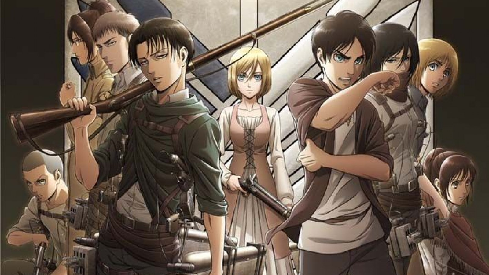
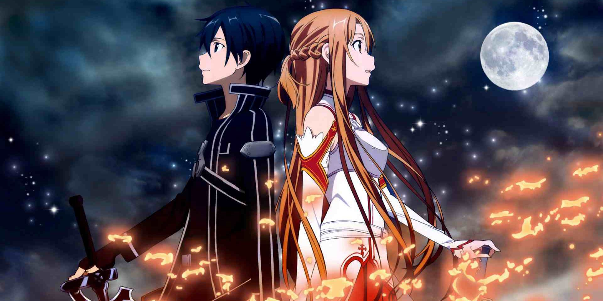

1. Death Note
Light Yagami is a genius high school student who is about to learn about life through a book of death. When a bored shinigami, a God of Death, named Ryuk drops a black notepad called a Death Note, Light receives power over life and death with the stroke of a pen. Determined to use this dark gift for the best, Light sets out to rid the world of evil… namely, the people he believes to be evil. Should anyone hold such power?
The consequences of Light’s actions will set the world ablaze.
2. Attack on Titan

Several hundred years ago, humans were nearly exterminated by titans. Titans are typically several stories tall, seem to have no intelligence, devour human beings and, worst of all, seem to do it for the pleasure rather than as a food source. A small percentage of humanity survived by walling themselves in a city protected by extremely high walls, even taller than the biggest of titans.
Flash forward to the present and the city has not seen a titan in over 100 years. Teenage boy Eren and his foster sister Mikasa witness something horrific as the city walls are destroyed by a colossal titan that appears out of thin air. As the smaller titans flood the city, the two kids watch in horror as their mother is eaten alive. Eren vows that he will murder every single titan and take revenge for all of mankind.
3. Fullmetal Alchemist Brotherhood
Alchemy is bound by this Law of Equivalent Exchange—something the young brothers Edward and Alphonse Elric only realize after attempting human transmutation: the one forbidden act of alchemy. They pay a terrible price for their transgression—Edward loses his left leg, Alphonse his physical body. It is only by the desperate sacrifice of Edward's right arm that he is able to affix Alphonse's soul to a suit of armor. Devastated and alone, it is the hope that they would both eventually return to their original bodies that gives Edward the inspiration to obtain metal limbs called "automail" and become a state alchemist, the Fullmetal Alchemist.
Three years of searching later, the brothers seek the Philosopher's Stone, a mythical relic that allows an alchemist to overcome the Law of Equivalent Exchange. Even with military allies Colonel Roy Mustang, Lieutenant Riza Hawkeye, and Lieutenant Colonel Maes Hughes on their side, the brothers find themselves caught up in a nationwide conspiracy that leads them not only to the true nature of the elusive Philosopher's Stone, but their country's murky history as well. In between finding a serial killer and racing against time, Edward and Alphonse must ask themselves if what they are doing will make them human again... or take away their humanity.
4. Naruto
Naruto Uzumaki, a hyperactive and knuckle-headed ninja, lives in Konohagakure, the Hidden Leaf village. Moments prior to his birth, a huge demon known as the Kyuubi, the Nine-tailed Fox, attacked Konohagakure and wreaked havoc. In order to put an end to the Kyuubi's rampage, the leader of the village, the 4th Hokage, sacrificed his life and sealed the monstrous beast inside the newborn Naruto.
Shunned because of the presence of the Kyuubi inside him, Naruto struggles to find his place in the village. He strives to become the Hokage of Konohagakure, and he meets many friends and foes along the way.
5. Sword Art Online

In the near future, a Virtual Reality Massive Multiplayer Online Role-Playing Game (VRMMORPG) called Sword Art Online has been released where players control their avatars with their bodies using a piece of technology called Nerve Gear. One day, players discover they cannot log out, as the game creator is holding them captive unless they reach the 100th floor of the game's tower and defeat the final boss. However, if they die in the game, they die in real life. Their struggle for survival starts now...
6. Dr. Stone

After five years of harboring unspoken feelings, high-schooler Taiju Ooki is finally ready to confess his love to Yuzuriha Ogawa. Just when Taiju begins his confession however, a blinding green light strikes the Earth and petrifies mankind around the world— turning every single human into stone.
Several millennia later, Taiju awakens to find the modern world completely nonexistent, as nature has flourished in the years humanity stood still. Among a stone world of statues, Taiju encounters one other living human: his science-loving friend Senkuu, who has been active for a few months. Taiju learns that Senkuu has developed a grand scheme—to launch the complete revival of civilization with science. Taiju's brawn and Senkuu's brains combine to forge a formidable partnership, and they soon uncover a method to revive those petrified.
However, Senkuu's master plan is threatened when his ideologies are challenged by those who awaken. All the while, the reason for mankind's petrification remains unknown.
7. Demon Slayer

It is the Taisho Period in Japan. Tanjiro, a kindhearted boy who sells charcoal for a living, finds his family slaughtered by a demon. To make matters worse, his younger sister Nezuko, the sole survivor, has been transformed into a demon herself. Though devastated by this grim reality, Tanjiro resolves to become a “demon slayer” so that he can turn his sister back into a human, and kill the demon that massacred his family.
8. Promised Neverland
Emma, Norman and Ray are the brightest kids at the Grace Field House orphanage. And under the care of the woman they refer to as “Mom,” all the kids have enjoyed a comfortable life. Good food, clean clothes and the perfect environment to learn—what more could an orphan ask for? One day, though, Emma and Norman uncover the dark truth of the outside world they are forbidden from seeing.
9. Jujutsu Kaisen

Hardship, regret, shame: the negative feelings that humans feel become Curses that lurk in our everyday lives. The Curses run rampant throughout the world, capable of leading people to terrible misfortune and even death. What's more, the Curses can only be exorcised by another Curse.
Itadori Yuji is a boy with tremendous physical strength, though he lives a completely ordinary high school life. One day, to save a friend who has been attacked by Curses, he eats the finger of the Double-Faced Specter, taking the Curse into his own soul. From then on, he shares one body with the Double-Faced Specter. Guided by the most powerful of sorcerers, Gojou Satoru, Itadori is admitted to the Tokyo Metropolitan Technical High School of Sorcery, an organization that fights the Curses... and thus begins the heroic tale of a boy who became a Curse to exorcise a Curse, a life from which he could never turn back.
10. My Hero Academia
What would the world be like if 80 percent of the population manifested extraordinary superpowers called “Quirks” at age four? Heroes and villains would be battling it out everywhere! Becoming a hero would mean learning to use your power, but where would you go to study? U.A. High's Hero Program of course! But what would you do if you were one of the 20 percent who were born Quirkless?
Middle school student Izuku Midoriya wants to be a hero more than anything, but he hasn't got an ounce of power in him. With no chance of ever getting into the prestigious U.A. High School for budding heroes, his life is looking more and more like a dead end. Then an encounter with All Might, the greatest hero of them all gives him a chance to change his destiny…